1차 수정안 (아트 퀄업) 결과
2026-11-16 · 요청 사항/1차 수정안.docx 4가지 반영 · 자동 시험 오류 0 (새 검사 줄 9개 포함) · 화면은 시험이 직접 찍은 1080x2340 캡처 — 왼쪽 = 고치기 전(1차), 오른쪽 = 고친 뒤
먼저 알려 드릴 것 (제 해석)
- 대장 카피 = 옆으로 서서 레이저 소총을 오른쪽 위로 겨눈 모습입니다. 적이 왼쪽에 있으면 몸을 왼쪽으로 돌려(그림 좌우 뒤집기) 쏩니다. 쌍권총 → 소총 하나라 총구도 하나입니다.
- 대장 탄 색은 1차처럼 금빛으로 두고, 소총 에너지 칸·총구도 같은 금빛 네온으로 맞췄습니다 (레이저 포의 하늘색 빛과 헷갈리지 않게).
- "투박함 · 이음새·마감"은 ① 손그림 선 흔들림을 1/2~1/4 로 줄임 ② 모든 그림에 위→아래 명암 ③ 얼굴처럼 겹쳐 그린 곳을 한 줄 윤곽으로 바꾸는 것으로 해석했습니다. 화풍(굵은 갈색 선 · 파스텔)은 그대로입니다.
- 네온은 탄 · 레이저 · 낙뢰 · 불꽃 튐 · 총구 섬광에만 넣었고 "빛 더하기" 셰이더로 밤하늘에서 빛나게 했습니다. 끈끈이 장판은 겹치면 하얗게 타서 빛 더하기를 빼고 부드러운 띠로 바꿨습니다.
- 그림은 전부 코드(
tools/earth_art.py·earth_export.py)로 다시 뽑았습니다 — 고칠 점을 말씀 주시면 같은 이름으로 바로 바꿔 끼웁니다. 고치기 전 그림·코드는 따로 백업해 두었습니다.
① 대장 카피 — "정면이 아닌, 레이저 건을 들고 위로 쏘는 모습"
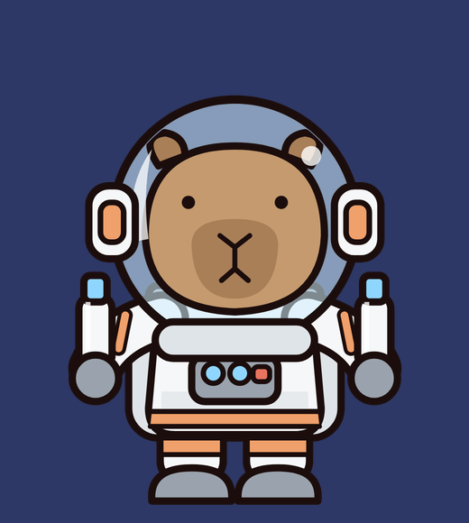
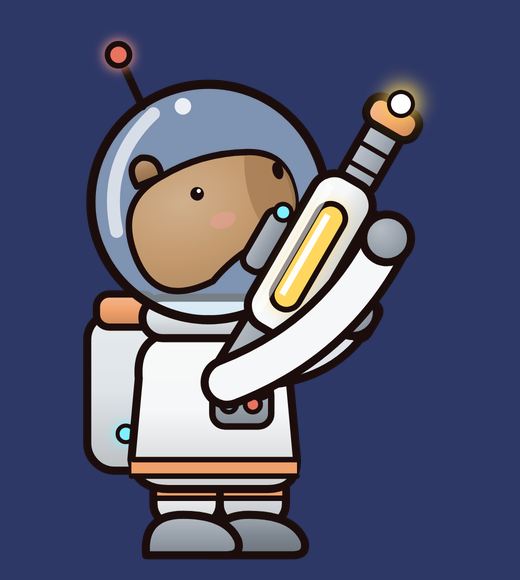
② 탄환 · 미사일 · 효과 — "밋밋 · 투박 → 네온 · 스파크"
위 = 전, 아래 = 뒤 (같은 배율). 탄은 테두리 대신 흰 심 + 색 번짐 + 꼬리, 미사일은 빛나는 불꽃 꼬리.
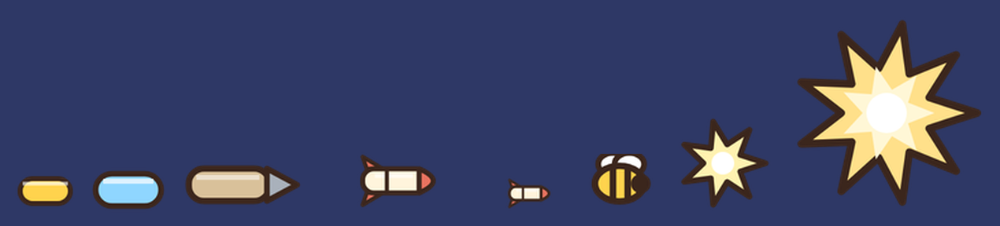
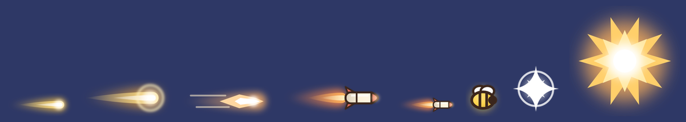
게임 안에서 더해진 움직임
- 총구 섬광 — 대장 카피 · 관통포가 쏠 때마다 네 갈래 빛
- 맞으면 불꽃 튐 — 탄이 맞은 자리에서 짧은 빛 줄 3~5개가 튀고 줄어듦 · 폭발은 빛 번짐 + 불꽃 8개
- 미사일 — 날아가는 동안 꼬리에서 불티가 계속 떨어짐
- 레이저 — 색 번짐 띠 + 흰 심 2겹 · 살짝 떨림 · 쏘는 곳에 빛 · 맞는 적마다 불꽃
- 낙뢰 — 모양 2개를 번갈아 보여 지직거림 · 바닥 빛 · 맞는 적마다 불꽃
③ 터렛 · 적 — 마감
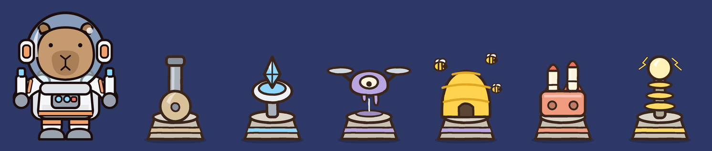
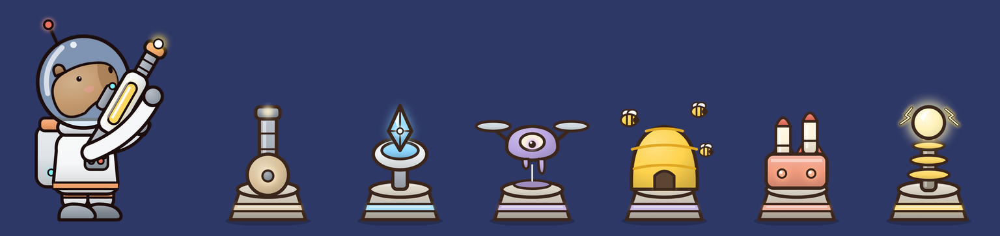
터렛: 명암 · 받침 속성 빛 띠 · 레이저 수정 · 벼락 구슬 · 드론 눈 · 미사일 등이 빛남
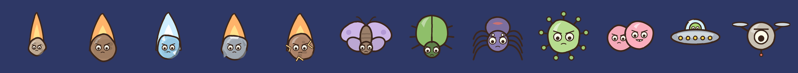
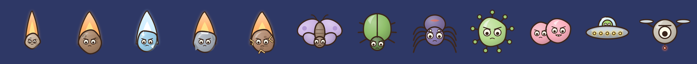
적: 선 흔들림 줄임 · 공 모양 명암 · 운석 불꼬리 빛 번짐 · 비행접시·정찰 드론 등
④ 전투 화면 전·뒤
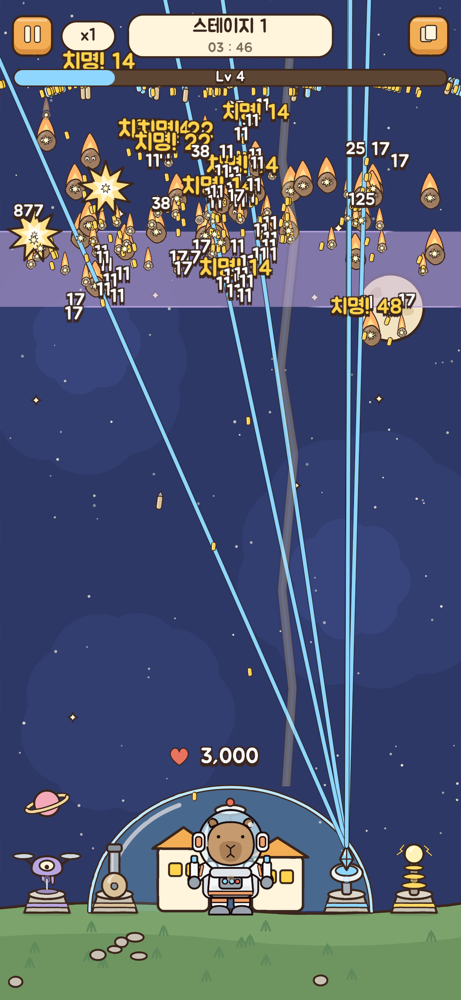
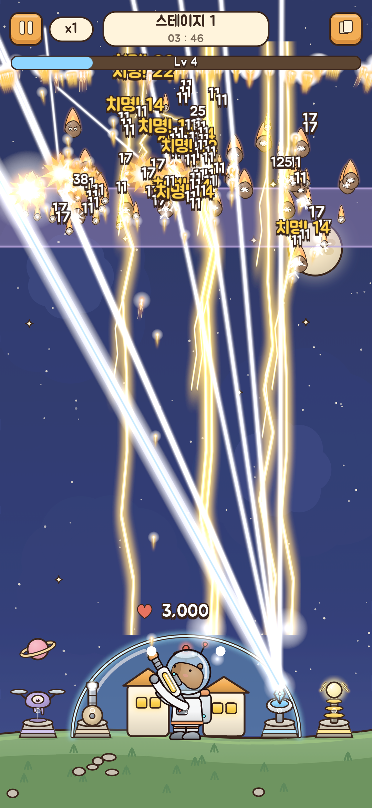

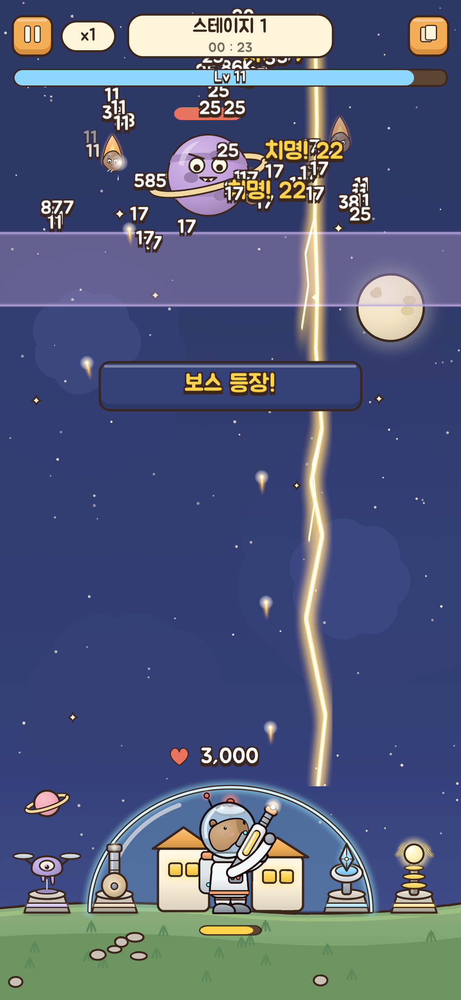


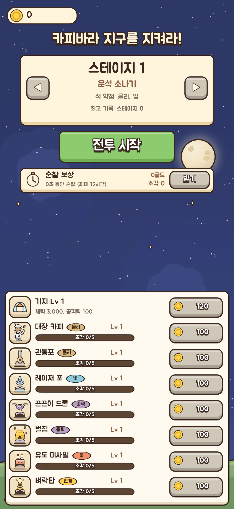